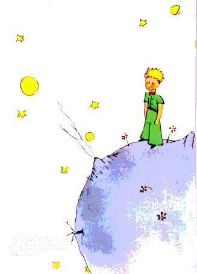

Il me fallut longtemps pour comprendre d'où il venait. Le petit prince, qui me posait beaucoup de questions, ne semblait jamais entendre les miennes. Ce sont des mots prononcés par hasard qui, peu à peu, m'ont tout révélé. Ainsi, quand il aperçut pour la première fois mon avion (je ne dessinerai pas mon avion, c'est un dessin beaucoup trop compliqué pour moi) il me demanda:
- Qu'est ce que c'est que cette chose-là ?
- Ce n'est pas une chose. Ça vole. C'est un avion. C'est mon avion.
Et j'étais fier de lui apprendre que je volais. Alors il s'écria:
- Comment ! tu es tombé du ciel !
- Oui, fis-je modestement.
- Ah! ça c'est drôle...
Et le petit prince eut un très joli éclat de rire qui m'irrita beaucoup. Je désire que l'on prenne mes malheurs au sérieux. Puis il ajouta:
- Alors, toi aussi tu viens du ciel ! De quelle planète es-tu ?
J'entrevis aussitôt une lueur, dans le mystère de sa présence, et j'interrogeai brusquement:
- Tu viens donc d'une autre planète ?
Mais il ne me répondit pas. Il hochait la tête doucement tout en regardant mon avion:
- C'est vrai que, là-dessus, tu ne peux pas venir de bien loin...
Et il s'enfonça dans une rêverie qui dura longtemps. Puis, sortant mon mouton de sa poche, il se plongea dans la contemplation de son trésor.
Vous imaginez combien j'avais pu être intrigué par cette demi-confidence sur "les autres planètes". Je m'efforçai donc d'en savoir plus long: 
- D'où viens-tu mon petit bonhomme ? Où est-ce "chez toi" ? Où veux-tu emporter mon mouton ?
Il me répondit après un silence méditatif:
- Ce qui est bien, avec la caisse que tu m'as donnée, c'est que, la nuit, ça lui servira de maison.
- Bien sûr. Et si tu es gentil, je te donnerai aussi une corde pour l'attacher pendant le jour. Et un piquet.
La proposition parut choquer le petit prince:
- L'attacher ? Quelle drôle d'idée !
- Mais si tu ne l'attaches pas, il ira n'importe où, et il se perdra...
Et mon ami eut un nouvel éclat de rire:
- Mais où veux-tu qu'il aille !
- N'importe où. Droit devant lui...
Alors le petit prince remarqua gravement:
- Ça ne fait rien, c'est tellement petit, chez moi !
Et, avec un peu de mélancolie, peut-être, il ajouta:
- Droit devant soi on ne peut pas aller bien loin...
| Chapitre II | Capítulo II | |
| Index | |
Capítulo III |
| Chapitre IV | Capítulo IV |